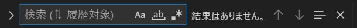
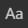
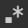

VSCode
[ctrl] + [L]
カーソルのある行を全選択する
[ctrl] + [shift] + [k]
カーソルのある行を削除する
[ctrl] + [shift] + [Enter]
上に空白行を入れる
[ctrl] + [Enter]
下に空白行を作る
[shift] + [Alt] + [↓]
下にそのままコピー
[ctrl] + [/]
コメントにする（入れる）
[ctrl] + [D]
単語の選択 ※‐を使う英単語は別
[ctrl] + [shift] + [L]
選択した文字と同じものを全選択する
[ctrl] + [F]
文字の検索をする

-
・・・大文字小文字を区別して検索（[Alt] + [C]）
-
 ・・・単語単位で検索（[Alt] + [W]）
・・・単語単位で検索（[Alt] + [W]）
-
・・・正規表現を使用して検索（[Alt] + [R]）
・・・単語単位で検索（[Alt] + [W]）
正規表現についての勉強はこちらがおすすめ
ゲーム作くんのサイト